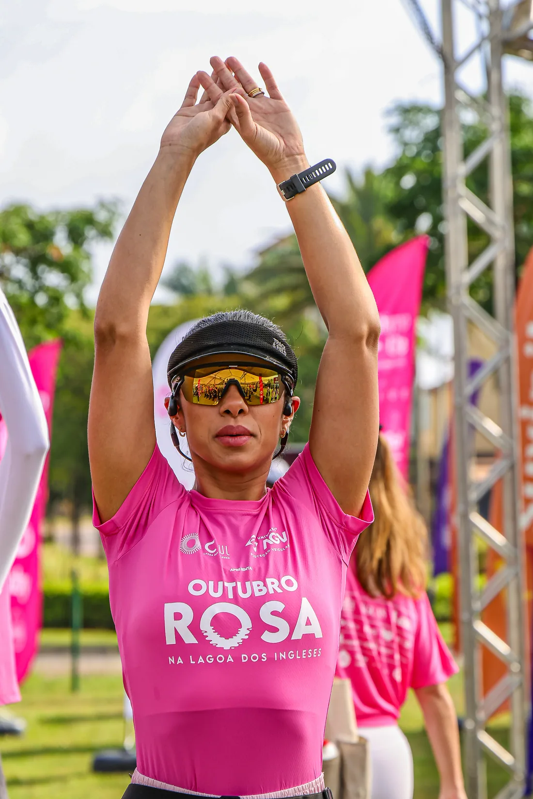
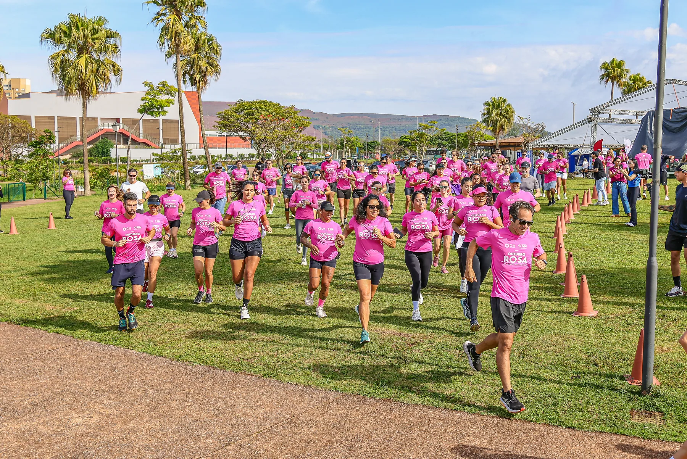
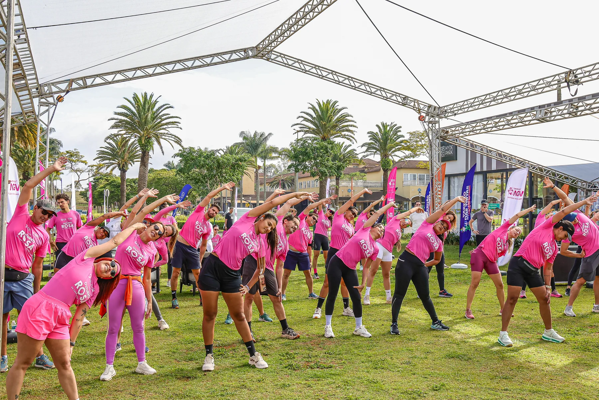
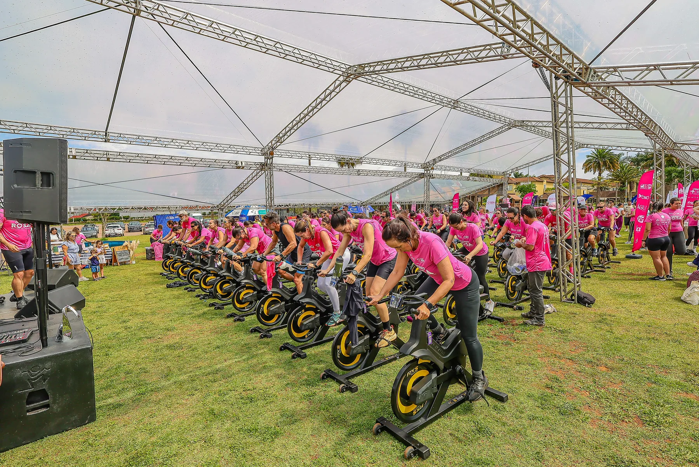
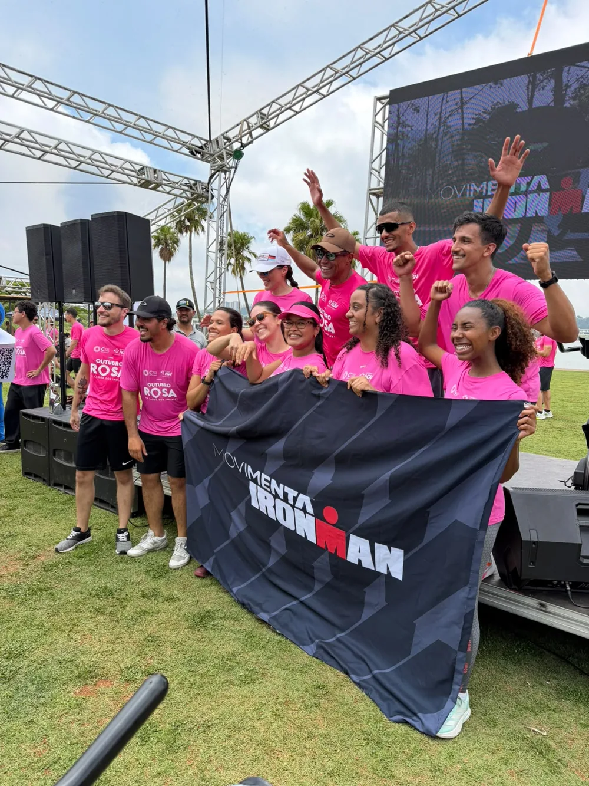
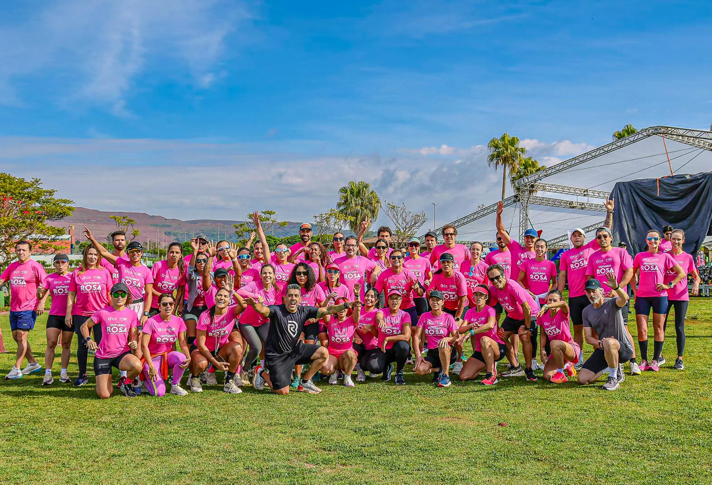
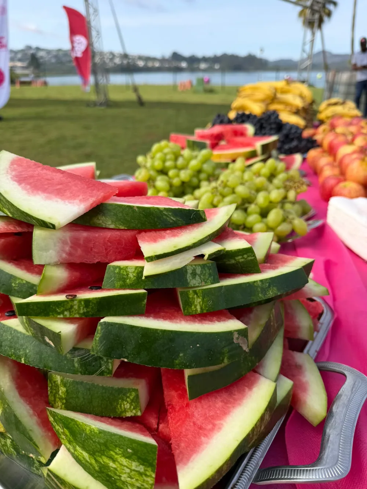
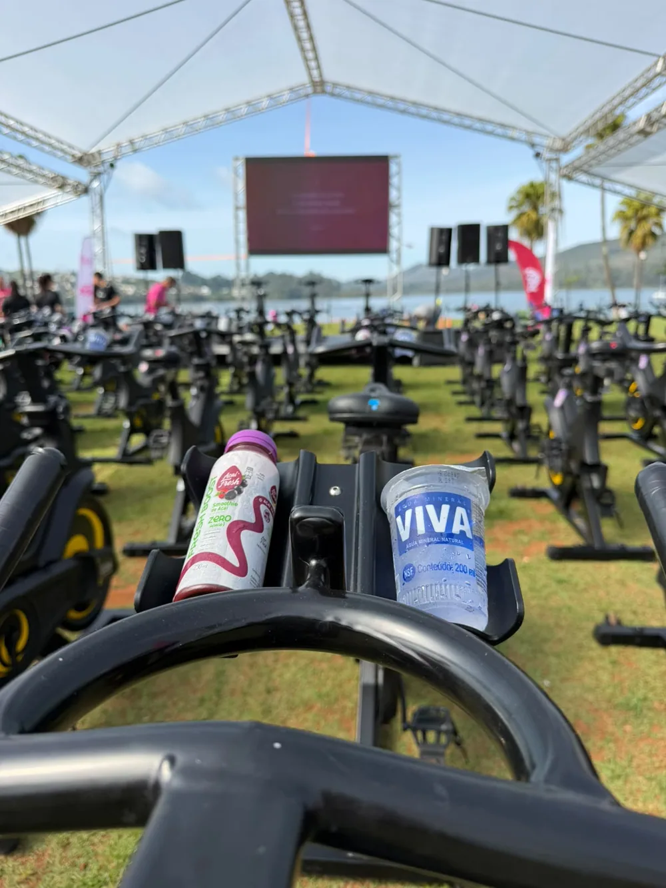
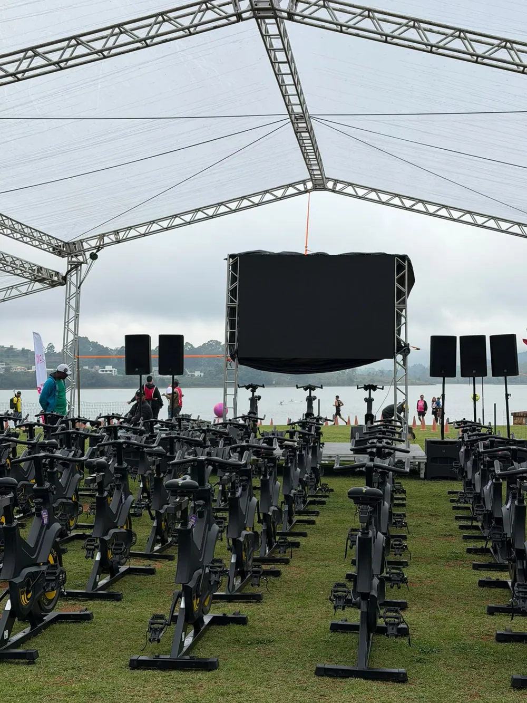

Um sábado inesquecível
Passos por uma causa
Movimento em família
Energia do começo ao fim
Obrigado por fazer parte
JUNTOS,
JUNTOS,
MOVEMOS MUITO MAIS.
A Lagoa dos Ingleses se vestiu de rosa para uma manhã de esporte, conexão e conscientização.
Entre corrida, caminhada e spinning, cada movimento carregou uma mensagem de autocuidado, prevenção e esperança. Nosso agradecimento a participantes, parceiros, apoiadores e a toda equipe que tornou esse encontro possível.

Como foi
ENERGIA QUE
ENERGIA QUE
CONTAGIOU.
Do aquecimento à última pedalada, o dia foi feito de presença, incentivo e muita vibração.




Movimento Está Tudo Bem
UMA CAUSA QUE
UMA CAUSA QUE
CONTINUA EM MOVIMENTO.
Criado por Daniele Moreira após seu diagnóstico de câncer de mama, o Movimento Está Tudo Bem leva uma mensagem de fé, saúde e coragem.
O evento termina, mas a conversa sobre prevenção, autocuidado e apoio continua. Que cada lembrança desse dia seja também um convite para cuidar de si e de quem está por perto.
Registros do diaUM POUCO DO QUE
UM POUCO DO QUE
VIVEMOS JUNTOS.
Momentos de preparação, cuidado, movimento e celebração na Lagoa dos Ingleses.




Fotos oficiais
ENCONTRE
ENCONTRE
SEUS MELHORES
MOMENTOS.
Acesse a galeria completa, localize seus registros e guarde para sempre as lembranças desse encontro.
Ver e comprar fotos